Doni Ferdio Iqbal Dharmawanto
Quality Assurance • Quality Control • Continuous Improvement
Passionate Industrial Engineer with experience in Quality Assurance, Quality Control, Statistical Process Control (SPC), Lean Manufacturing, Manufacturing Systems, Root Cause Analysis, and Continuous Improvement.
5+
Years Experience12+
Professional Certifications3
Professional ExperiencesProfessional Profile
Industrial Engineer with practical experience in manufacturing quality systems, process improvement, Statistical Process Control (SPC), Lean Manufacturing, and Continuous Improvement.
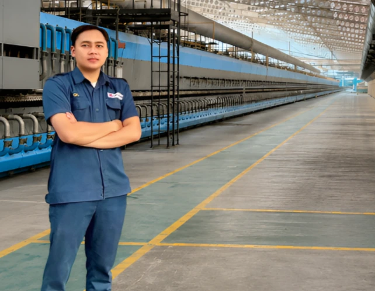
Building Better Quality Through Engineering and Continuous Improvement
I am an Industrial Engineer with experience in Quality Assurance and Quality Control within the manufacturing industry. My expertise includes product quality inspection, Statistical Process Control (SPC), Root Cause Analysis, Quality Management Systems, and Continuous Improvement.
I believe that quality is not only achieved through inspection, but also through data-driven decision making, process consistency, collaboration, and a commitment to continuous improvement.
My Working Principles
Every improvement begins with discipline, accurate data, and a commitment to maintaining quality throughout the manufacturing process.
Quality First
Product quality is the primary responsibility in every production process and must always meet established standards.
Data Driven
Every decision should be supported by measurable data, statistical analysis, and objective evidence.
Continuous Improvement
Sustainable improvement is achieved through consistent evaluation, innovation, and teamwork.
Professional Competencies
My competencies are built through academic knowledge, professional certifications, and hands-on experience in the manufacturing industry.
Quality Assurance
Developing and maintaining quality management systems to ensure consistent production quality.
Quality Control
Performing inspections, monitoring production, and identifying product defects effectively.
Statistical Process Control
Applying statistical methods to monitor and improve manufacturing process stability.
Lean Manufacturing
Eliminating waste and increasing operational efficiency through continuous improvement.
What I Deliver
My contribution focuses on improving product quality, process stability, operational efficiency, and sustainable manufacturing performance.
Quality Improvement
Supporting consistent product quality through inspection systems, process monitoring, and standardized quality procedures.
Process Stability
Utilizing SPC and production data to identify variation, maintain process stability, and reduce defects.
Continuous Improvement
Identifying improvement opportunities to increase productivity, reduce waste, and optimize manufacturing performance.
Team Collaboration
Collaborating effectively with production, engineering, and management teams to achieve common quality objectives.
Professional Experience
My professional journey in manufacturing and quality engineering.
PT Dharma Perkasa Gemilang
Ngoro, Mojokerto August 2023 – PresentQuality Assurance & Quality Control
Overview
Responsible for maintaining product quality throughout the ceramic manufacturing process by implementing inspection standards, monitoring production quality, and supporting continuous improvement initiatives.
Responsibilities
- In Process Quality Control
- Final Quality Inspection
- Defect Analysis & Root Cause Analysis
- Quality Documentation
- Production Quality Monitoring
- Statistical Process Control (SPC)
- Support Continuous Improvement
Key Achievements
- Improved inspection consistency through standardized quality procedures.
- Supported defect reduction using SPC and quality analysis.
- Maintained compliance with manufacturing quality standards.
Tools & Methods
Skills Used
PT Putra Mandiri Intipack
Balongbendo, Sidoarjo 2023Production Operator
Overview
Supported daily production activities by operating manufacturing equipment, maintaining production efficiency, and ensuring products met operational and quality standards throughout the production process.
Responsibilities
- Operate production machinery safely and efficiently.
- Monitor production process and machine performance.
- Maintain product quality according to company standards.
- Report production issues to supervisors.
- Perform basic machine inspection before operation.
- Support workplace cleanliness and 5S implementation.
Key Achievements
- Maintained stable production output while following operational procedures.
- Contributed to reducing production downtime through effective teamwork.
- Consistently complied with quality and workplace safety standards.
Tools & Methods
Skills Used
PT Kuda Laut Mas
Buduran, Sidoarjo January 2021 – December 2022Quality Control
Overview
Performed quality inspection activities to ensure products complied with company specifications, identified defects, and supported continuous product quality improvement.
Responsibilities
- Inspect raw materials, in-process, and finished products.
- Record inspection results accurately.
- Identify and classify product defects.
- Ensure compliance with quality standards.
- Coordinate with production teams regarding quality issues.
- Support corrective and preventive actions.
Key Achievements
- Maintained inspection accuracy and documentation consistency.
- Supported defect identification for faster corrective action.
- Contributed to maintaining customer quality requirements.
Tools & Methods
Skills Used
Academic Background
My academic journey has strengthened my knowledge in Industrial Engineering, manufacturing systems, quality management, production optimization, and continuous improvement.
Universitas PGRI Adi Buana Surabaya
Bachelor of Industrial Engineering (S.T.) Surabaya • Graduated 2026Overview
Graduated with a GPA of 3.62/4.00, with an academic foundation in Industrial Engineering and a strong interest in quality management, manufacturing systems, production planning, and continuous improvement.
Academic Focus
Core Courses
- Quality Management
- Statistical Quality Control
- Production Planning & Inventory Control
- Operations Research
- Manufacturing Systems
- Ergonomics & Work System Design
- Supply Chain Management
- Project Management
Professional Skills
A combination of technical knowledge, engineering software, quality management expertise, and practical experience developed through academic learning, professional certifications, and manufacturing industry experience.
Quality Management
Engineering Software
Technical Knowledge
Additional Skills
Professional Certifications
Professional certifications that strengthen my competencies in Quality Management, Manufacturing, Food Safety, Occupational Safety, and Continuous Improvement.
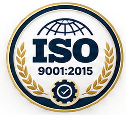
ISO 9001:2015
Quality Management System
ISO 14001:2015
Environmental Management System
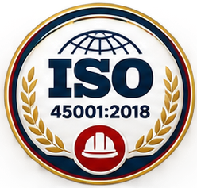
ISO 45001:2018
Occupational Health & Safety Management System
ISO 19011:2018
Guidelines for Auditing Management Systems
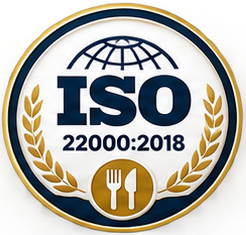
ISO 22000:2018
Food Safety Management System
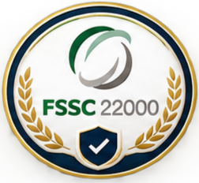
FSSC 22000
Food Safety System Certification
HACCP
Hazard Analysis & Critical Control Points
Good Manufacturing Practices
Manufacturing Quality Standards
QA & QC Food Industry
Food Quality Assurance & Quality Control
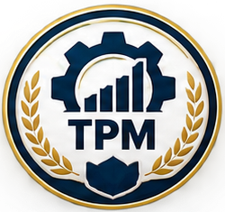
Certified TPM Professional
Total Productive Maintenance
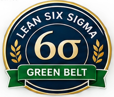
Lean Six Sigma Green Belt
Process Improvement Methodology
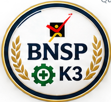
BNSP Occupational Safety (K3)
Occupational Health & Safety Competency
Projects & Publications
A collection of professional projects and academic publications that demonstrate my experience in quality engineering, manufacturing systems, and Industrial Engineering.
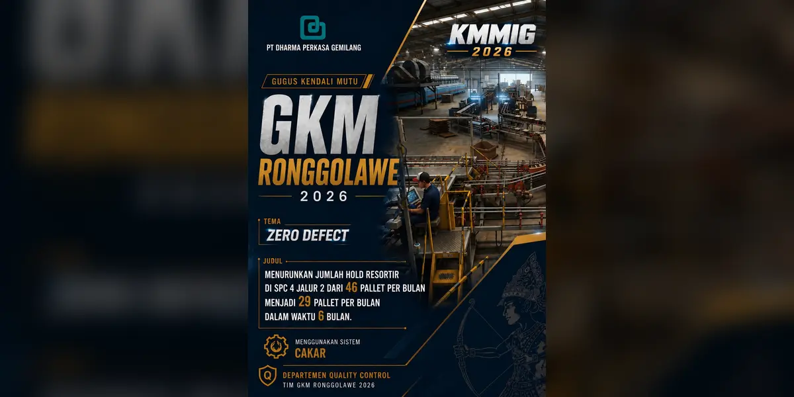
Menurunkan Jumlah Hold Resortir Di SPC 4 Jalur 2 Dari 46 Pallet Per Bulan Menjadi 29 Pallet Per Bulan Dalam Waktu 6 Bulan
PT Dharma Perkasa Gemilang
Proyek peningkatan kualitas yang berfokus pada pengurangan Hold Resortir akibat kelolosan defect reject di area sortir Jalur 2 melalui sistem CAKAR (Cegah Kelolosan Reject). Improvement mencakup optimalisasi pencahayaan, guidance defect, dan metode komunikasi informasi defect antara QC dan petugas sortir.
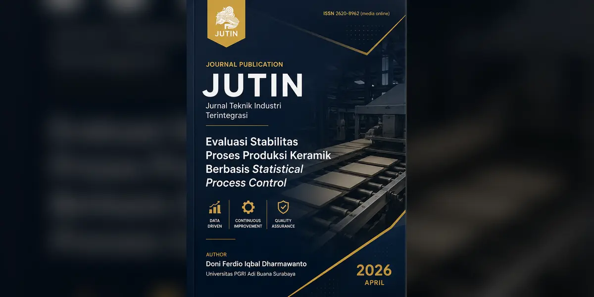
Evaluasi Stabilitas Proses Produksi Keramik Berbasis Statistical Process Control
Univeristas PGRI Adi Buana Surabaya
Penelitian mengenai evaluasi kestabilan proses produksi keramik menggunakan pendekatan Statistical Process Control (SPC) berbasis data atribut. Analisis mencakup peta kendali np-Chart dan diagram Pareto untuk mengidentifikasi variasi proses serta cacat dominan
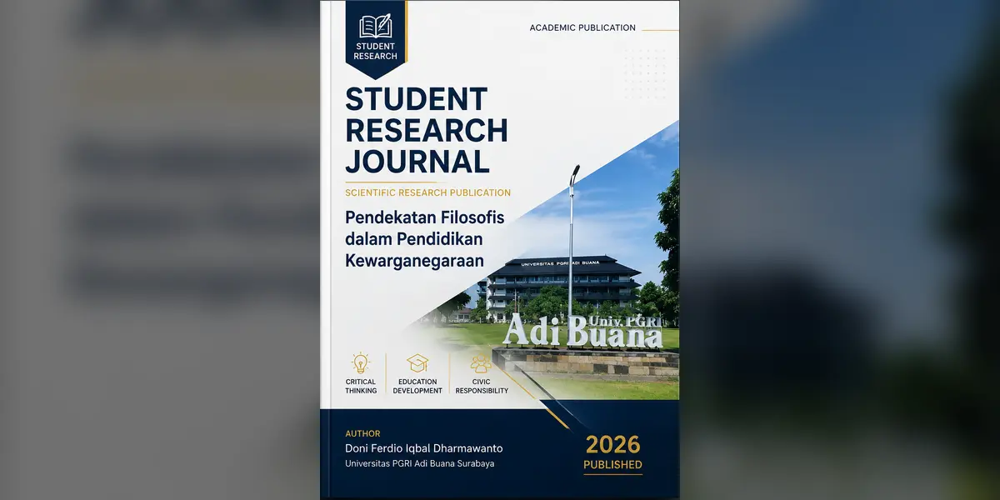
Pendekatan Filosofis dalam Pengantar Pendidikan Kewarganegaraan di Perguruan Tinggi Berbasis Pembukaan UUD 1945 di Abad Ke-21
Universitas PGRI Adi Buana Surabaya
Penelitian mengenai pendidikan kewarganegaraan di perguruan tinggi melalui pendekatan filosofis terhadap Pembukaan UUD 1945, dengan fokus pada nilai Pancasila, demokrasi, keberagaman, persatuan, serta pengembangan kemampuan kritis mahasiswa.
Let's Work Together
Thank you for visiting my professional portofolio. Feel free to contact me for collaboration, professional opportunities, research discussions, or other inquiries.